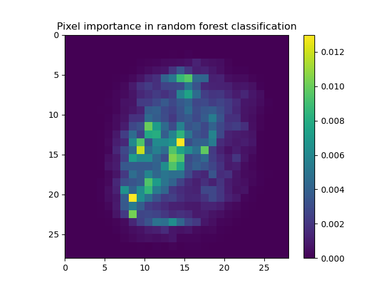

Results¶
Note
This project was done within the scope of a class in Artificial Intelligence given by UniDistance and the Idiap Research Institute. It is merely an exercise on reproducibility and in no way published work, and should not be interpreted as such.
Hypothesis¶
Our hypothesis which initiated the project the following:
Random Forests can give similar resulting prediction models to MLP Neural Networks on the M-NIST digit dataset in significantly less time.
To test this, we elaborated this project, which pulls data from the M-NIST digit dataset, trains and tests different algorithms with different configurations and provides reports to compare the algorithms.
By running our code with the simple command
mnist-predict -ts test_suite_example.json
We can observe these results. A partial view (without redundant algorithm parameters) of the generated report is the following table :
Iteration |
Algorithm |
Train Accuracy |
Test Accuracy |
Standard Error |
Training time (s) |
|---|---|---|---|---|---|
0 |
MLP |
0.984 |
0.9561 |
0.004 |
98.26 |
1 |
MLP |
0.996 |
0.9744 |
0.003 |
153.64 |
2 |
Random Forest |
0.798 |
0.8054 |
0.008 |
1.7 |
3 |
Random Forest |
0.999 |
0.9665 |
0.004 |
22.86 |
Conclusion¶
In conclusion, we accept our hypothesis. The data shows that Random Forest algorithms can indeed converge to acceptable results in much shorter training time. Here, the most notable algorithms are the MLP in iteration 1, and the Random Forest in iteration 3. However, this conclusion does come with several limitations.
Future Works¶
More in depth study could probably speed up training time and accuracy of both algorithms. For instance, using the generated views showing which pixels bring the most importance to the algorithm’s final decision as seen in Figures 1 and 2, we can determine that many pixels on the outer edges are mostly irrelevant to the final decision. Irrelevant pixels can be filtered out in pre-processing to speed up the MLP.
- Figure 1
The feature importance of the Random Forest Algorithm in Iteration 3
- Figure 2
The input layer’s coefficients into the first 16 neurons of the first hidden layer of the MLP in Iteration 1